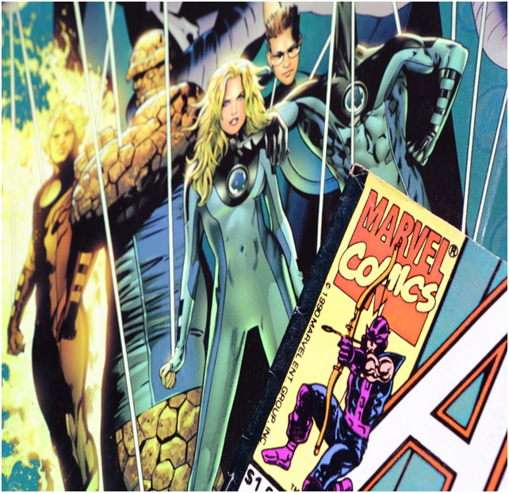
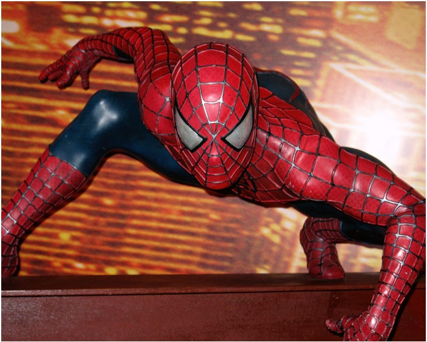
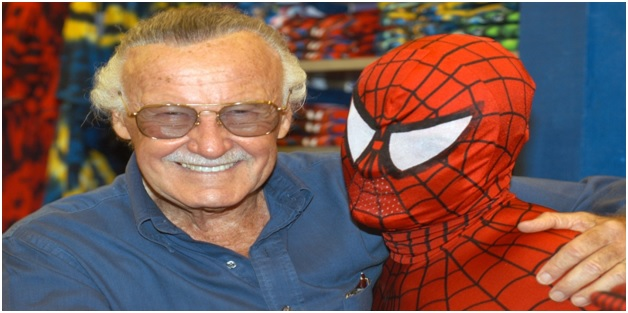

Marvel Entertainments
MARVEL COMIC UNIVERSE(MCU)-:
Marvel Comics, American media and entertainment company that was widely regarded as one of the “big two” publishers in the comic industry. Its parent company, Marvel Entertainment, is a wholly owned subsidiary of the Disney Company. Its headquarters are in New York City.
Corporate history
The precursor to Marvel Comics was founded in 1939 by pulp magazine publisher Martin Goodman. In order to capitalize on the growing popularity of comic books—especially those starring superheroes—Goodman created Timely Comics. Timely’s first comic book was Marvel Comics no. 1 (cover dated October 1939), which featured several superhero characters, most notably the Human Torch and the Sub-Mariner. Timely Comics introduced many superhero characters during comics’ “Golden Age” in the 1940s, most importantly Captain America, who first appeared in Captain America Comics no. 1 (March 1941). Timely characters were often portrayed as fighting against the Nazis and the Japanese even before the United States entered World War II. As the 1940s came to a close, superheroes fell out of vogue with comic book readers, and Timely canceled the last of its books in this genre in 1950. In 1951 Goodman formed his own distribution company, and Timely Comics became Atlas Magazines. Though there was a brief experiment in bringing back superheroes such as Captain America in 1953, Atlas’s output was mostly in other genres such as humour, westerns, horror, war, and science fiction.
FIRST EVER MARVEL SUPER-HERO-
Human Torch who was Marvel Comics' first original character? The first comic book issued by Marvel's precursor Timely Comics, in October 1939, featured the debut of the characters Human Torch, Sub-Mariner, the Angel, Ka-Zar, and the Masked Raider.
Marvel Comics #1-:
Published in 1939, Marvel Comics #1 featured Namor the Submariner and The Human Torch . The comic was a big success and led to the creation of more famous Timely characters.
Fantastic Four -:

Before 1961, superheroes were perfect, handsome gods, fighting simplistic battles. Comic books were designed to appeal to children and no one else. When The Fantastic Four #1 first hit shelves in November of that year, it was nothing like its predecessors.
Stan Lee’s Mr. Fantastic, the Invisible Girl, the Human Torch, and the Thing were flawed, petty, and above all, human. They argued. They made mistakes. One of them was literally a monster. Despite their supernatural powers, the Fantastic Four were painfully relatable. Comic book readers had never seen anything like them before.
A New Kind of Hero

The Fantastic Four was a huge hit with readers. The series’ success gave Stan Lee the opportunity to create another character, this time with artist Steve Ditko. Again eschewing the superhero archetype, this new character was a nerdy, unconfident teenager. He constantly screwed up. In the very first issue, his selfishness got his own uncle killed.
Spider-Man was an absolute smash hit. Its success laid the groundwork for Marvel Comics to become the medium’s uncontested juggernaut. While DC featured polished, idealistic heroes, Superman being the obvious example, Marvel became famous for its unrelenting humanism. Because Marvel heroes were relatable and complex, comic books could go deeper than they ever had before.
Though the early Fantastic Four and Spider-Man issues may seem a little hokey to modern readers, they created a framework that allowed comic books to grow and change. Comic legends like Alan Moore, Frank Miller, and Neil Gaiman all owe a serious debt to these early works by Lee, Kirby, and Ditko.
The True Beginning
So while the Human Torch appeared in Timely Publications’ Marvel Comics #1 in 1939, I would say that Marvel’s first superhero(es) came much later. Stan Lee, Jack Kirby, and The Fantastic Four gave Marvel Comics the identity that millions of people came to know and love. Several Marvel characters technically predate them, but that is where Marvel truly began.
